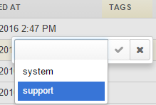
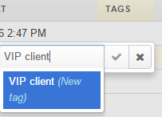
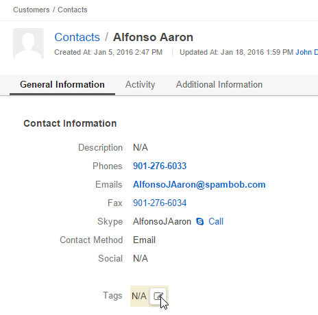
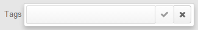
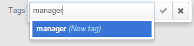

Tags¶
Tags are non-hierarchical keywords or phrases that are assigned to records. They provide additional information about records and are visible to all the system users. Tags can be assigned to any records of any entity and used for filtering. They can also be used to create a report for only the records that have/don’t have a specific tag, and even generate targeted segments for mailings and marketing campaigns. Moreover, you can easily find all records that have a specific tag from anywhere in the system, even if you don’t know their other details, as described below.
Add a Tag to a Record¶
You can add a tag from the grid or from a View page of a specific record.
Add a Tag from the Grid¶
The tag column is available by default on the grids. If they are not, you can add the column. Adding a tag is no different from editing other properties from a grid:
- Double-click the tag cell of the record.
- Select one or several of the existing tags from the list, and/or enter a new tag in the field.

Start entering the tag, and only matching tags will be left in the selector.
If you have entered a new tag, it will also appear in the selector. Select it to add. This way you can add one or several tags that contain one or several words.

Confirm the action.
Add a Tag from the View page¶
In order to add a tag to a record from its View page of a record:
Go to the “Tags” field.

Click the icon, and the tag field will appear.

Start entering the tag, and only matching tags will be left in the selector.
If you have entered a new tag, it will also appear in the selector. Select it to add. This way you can add one or several tags that contain one or several words.

Click the check to confirm the action.
Manage Tags¶
You can see all the tags available in the system, as well as the amount of times they were assigned to a record, in the Tags grid.
From the grid, you can:
- Get to the Create form of the tag:
- Click the Create Tag button.
- Define the tag owner and the tag itself.
- Get to the Edit form of the tag:
- Delete the tag:
- View all the records that were marked with this tag:
Search by Tag¶
In order to see all the records with a specific tag anywhere in the system.


You will see the page similar to the search results. It will contain all the records with this tag.

Conclusion¶
Tags are easy to add and can help manage the content of any record. They can be used to find records from anywhere within the system and can filter records for reports and segments.